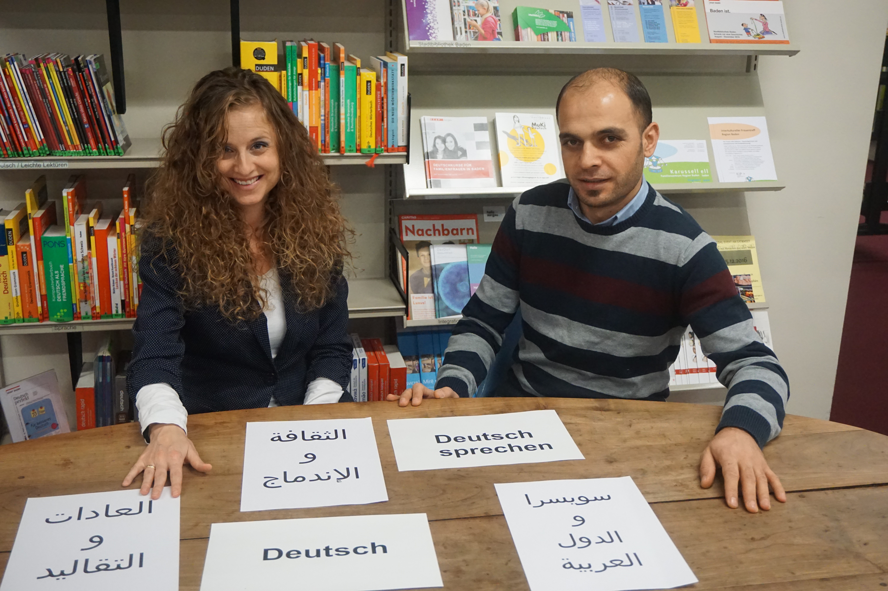
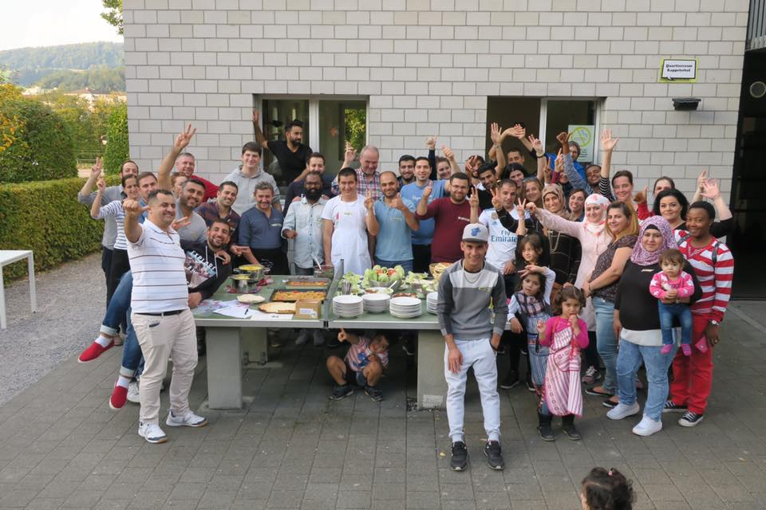

Projekte
Deutsch-Café für Arabisch-Sprechende
Jeden Samstag um 13:30 Uhr findet in der Stadtbibliothek Baden das Sprach-Café für Arabisch-Sprechende statt. Jede Woche sprechen wir über ein anderes Thema und so lernen die Teilnehmenden die Schweiz besser kennen. Das Sprach-Café hilft Flüchtlingen und Migranten, sich zu integrieren, über ihre eigene Kultur zu sprechen und die Schweizer Sitten und Bräuche zu verstehen.
Grenzenlos geniessen
Integration geht über den Magen – Gemeinsam kochen, gemeinsam geniessen und neue Kontakte knüpfen. Ein gemeinsames Kocherlebnis mit geflüchteten, zugewanderten und beheimateten Menschen mit dem Ziel, den Austausch zwischen den Kulturen zu fördern. Zusammen mit den zugewanderten und geflüchteten Menschen gestaltet JASS – just a simple scarf das Menü, gekocht wird dann gemeinsam.